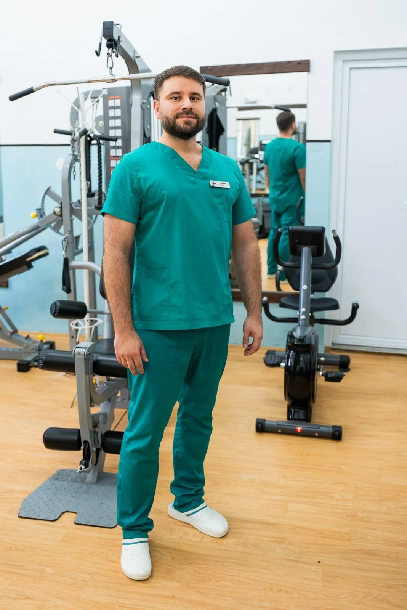

Published on
In this article we introduce our kinesiotherapy and training room. It has a wide range of machines and equipment to help with recovery, and suits anyone who wants to improve their posture or fitness, or simply keep moving.
Our kinesiotherapist, Bogdan, offers:
- recovery programmes for a range of conditions
- programmes to improve mobility, coordination and balance
- fitness exercises for muscle toning

For medical recovery, we have programmes for a wide range of conditions. These are the ones most often treated in our room.
Post-operative recovery
After joint replacement, arthrotomy and arthroscopy, ligament reconstruction and surgical treatment of fractures. The most common are:
- hip and knee replacements
- cruciate ligament surgery
- meniscus surgery
We have a robotic medical device used in post-surgical rehabilitation, which gently and effectively increases the range of motion of the joints (hip, knee, ankle).
Recovery in degenerative conditions (arthrosis)
Among the most common: cervical spondylosis, degenerative disc disease, coxarthrosis, gonarthrosis, and arthrosis of the hands and ankles.
Kinesiotherapy programmes aim to improve joint function and to reduce and eliminate pain. Equipment used:
- sticks and balls for mobility
- elastic bands for toning and muscle activation
- Bobath ball
- mini-bike for mobilising the hand joints
- wall bars
Fine motor recovery
- Canadian board for improving everyday activities
- occupational therapy games
- balls and bands for hand recovery
Recovery in neurological conditions
Especially paresis following a stroke. In addition to the equipment above, we use:
- pulleys for self-assisted arm mobilisation
- a wheel for mobilising the shoulder and increasing its range of motion
- equipment to improve cardiovascular function
- gait recovery equipment
This category also includes Parkinson’s disease, paraparesis, tetraparesis and cerebellar ataxia.
Spinal posture disorders
- relieving the symptoms of spinal conditions
- improving posture
- increasing spinal mobility through specific exercises
Recovery in autoimmune diseases
Rheumatoid arthritis, scleroderma, ankylosing spondylitis, myasthenia gravis.
Recovery in chronic lung and/or heart disease
In addition to equipment for improving cardiovascular function, we offer breathing exercise programmes.
Weight-loss and fitness programmes
Our room also suits people who want to lose weight. We provide:
- treadmill
- ergonomic bikes
- fixed and dynamic stepper
- elliptical trainer
You can also track your body mass indices with a smart scale, which lets you follow your progress and set goals. The room also has a multifunctional fitness machine with cable pulley, dumbbells and weight plates.
Bogdan is a qualified fitness instructor and can create personalised programmes for each client’s needs.
We look forward to helping you enjoy the results of movement therapy!